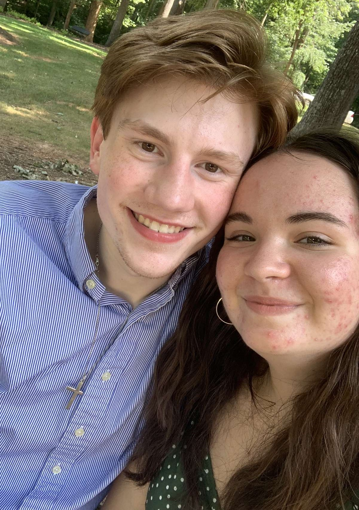

For people who claim to only ever go to school or work, we seem to have gone to quite a few places. Here are some of them:
Hiking! I never thought I would like to hike, but with you it is very fun.
That one time we were essentially trapped in Twisted Oak because of the thunderstorm.
Thunderstorms remind me of you. They provide very nice ambiance.

The Duck Park (unofficial name, of course). Not only did we become too attached to some birds there and name them after
self-checkouts like Food Lion crazed fools, but were described very accurately as "lovebirds" ourselves.
Mi Pueblo, the site of our first kiss and many ACP dinners.

PROM!!! Easily one of the best nights of my life. I love dancing with you like no one else is watching, especially
when we have no idea what song is playing (which was 95% of the time). So many songs remind me of prom,
such as Mayor of Simpleton, Dancing Queen, the Cotton Eye Joe, Shake it Off, and many more.
My dorm, or as I said when you were here, "my own house". It was fun to show you all of the places that reminded me of you on campus.
Other honorable mentions (which I don't have a picture for) include the literal courthouse to pay my ticket, Lake Norman State Park,
the mall, Pla Mor Lanes for bowling (among other things...), and lots and lots of places to eat.